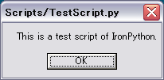
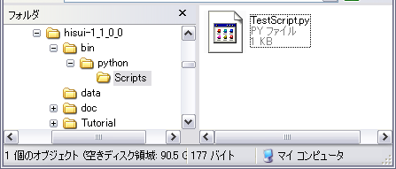

Pythonコンソールの起動メニュー
IronPython とは .NET Framework 上で動作する Python スクリプトです。 ヒスイには IronPython との連携が用意されており、例えば Python でコマンドを作成することが出来ます。
IronPython とは .NET Framework 上で動作する Python の処理系です。 IronPython に関する情報は下記の CodePlex のページ（Microsoftが運用するコミュニティサイト）から入手できます。
http://www.codeplex.com/Wiki/View.aspx?ProjectName=IronPythonここで説明する Python コンソールの機能はまだ不安定です。 特に、IntelliSenseライクな補完機能にはまだ多くの不具合が残っており、実用段階には至っていません。 実験的な機能であることを了承の上、お試しください。
[ツール|pythonコンソール] メニューからコンソールウィンドウを起動することが出来ます。
Pythonコンソールの起動メニュー

起動した python コンソール "Naga(ナーガ)"
すると Naga（ナーガ）という Python のコンソールウィンドウが開きます。 ナーガとはインド神話に登場する蛇の神様です。Python（ニシキヘビ）の連想で命名しました。
画面は大きく4つのエリアに分かれています。
| 位置 | 名前 | 説明 |
|---|---|---|
| 上段左 | 標準出力欄 | コマンド実行結果の標準出力に使われます |
| 上段右 | 変数テーブル | 現在定義されている変数一覧を表示します |
| 中段 | コマンド入力欄 | ここにコマンドを入力します |
| 下段 | 入力履歴欄 | コマンドの入力履歴がここに蓄積されます |
では、まずは定番の Hello World から始めましょう。中段のコマンド入力欄に
print "Hello World"
と入力してENTERキーを押してください。すると次の結果が得られます。

上段左の標準出力欄には、Hello World という文字列が表示できていることが分かります。 また、下段の入力履歴欄には、今入力した print "Hello World" という文字列がそのまま履歴として蓄積されていることが分かります。
入力履歴欄は、実は履歴を溜めるだけではなく、ここを直接編集して一括実行することが出来ます。 例えば入力履歴欄に次のpythonプログラムを打ち込んでみてください。
list = ["Hello", "Iron", "Python"] for s in list: print s
そしてツールバーの ボタンを押すと、次の結果が得られます。
ボタンを押すと、次の結果が得られます。

ここで書いたスクリプトは保存することも出来ますし、別のファイルから読み込んでくることも出来ます。
例えばコマンド入力欄に次のように入力してください。
print Current.Document.Entries.Count
これは「ドキュメントのトップレベルに登録されているエントリの数を標準出力にプリントせよ」というプログラムです。 Current というのは Hisui.Ctrl.Current クラスです。 このようにして Python スクリプトからヒスイ内部のオブジェクト（クラス）を操作することが出来ます。
ドキュメントが空の場合には当然上記のプログラムは 0 と出力します。 STLなどのファイルを読み込んでから実行すれば 1 と出力するはずです。
ヒスイには図のような [Scripts|テスト] メニューが組み込まれています。

これは Python によるコマンドのテストスクリプトで、起動すると次のメッセージボックスが表示されます。

このスクリプトは bin/python/Scripts/TestScript.py に書かれています。

そのソースコードは下記の通りです。
import clr clr.AddReference( "System.Windows.Forms" ) from System.Windows.Forms import * MessageBox.Show( "This is a test script of IronPython.", "Scripts/TestScript.py")
Pythonスクリプトを配置するフォルダは、config.xmlで指定されています。
<?xml version="1.0" encoding="Shift_JIS"?>
<config>
...
<command>
<python dir="python"/>
<caption name="Scripts.TestScript">テスト</caption>
</command>
</config>
このように指定した位置に *.py ファイルを配置すれば、それがメニューとして自動的に登録されます。
Copyright © 2007, 株式会社カタッチ
http://www.quatouch.com